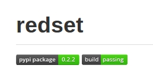

opensourcing redset
@jamesob

topics
- redset
- why another package?
- grooming for opensource
- releasing into the wild
but first
a little background on the codebase at Percolate
code size
Multiple repos, a few services, but we do have a core codebase
http://cloc.sourceforge.net v 1.56
--------------------------------------------------
Language files code
--------------------------------------------------
Python 822 120613
Javascript 1068 76590
HTML 570 27181
SQL 32 2518
CSS 14 2444
YAML 2 848
Bourne Shell 23 358
Bourne Again Shell 3 201
Ruby 1 47
--------------------------------------------------
SUM: 2535 230800
--------------------------------------------------
so: roughly 120k lines of python
(including tests & doc)
build times
- we really like CI
- jenkins builds every candidate commit
- a full build on master takes about 23 minutes
in summary
- a lot of code in one repo — indicates high coupling
- builds take a fair amount of time
not a crisis, but not a trend to continue
how do we address this?
the benefits of decomposition
- design 101: extract and package general functionality
- avoids redundant testing
- coverage metrics become useful
- maintenance becomes easier on both ends
- costs a little extra overhead, but libraries much less so than services
a good candidate
- so where's our "general functionality"?
- we have this class hierarchy that handles our distributed taskset management
- ...that sounds pretty general
- good candidate for extraction and packaging!
hasn't someone already done this?
- step #1: search out an existing solution
- odds are, you'll find one
- great: less work for you
- fit isn't exact? contribute or wrap: be hesitant to fork
how to check
- generous amounts of googling
- ask your team
- check pypi! (it is searchable)
so let's talk about redset
- Simple sorted sets backed by Redis that can be used to coordinate distributed systems
- solves different problems than conventional queuing solutions (e.g., celery, rq)
- mimics Python's builtin
setinterface - lightweight, no daemons or client processes to run
- well tested
-
on pypi, github.com/percolate/redset

quick example
import json
from redset import TimeSortedSet
ss = TimeSortedSet(redis.Redis(), 'so-much-work', serializer=json)
ss.add({'task': 1})
ss.add({'task': 2})
# from some other process...
ss.pop() # -> {'task': 1}
# monitor age of oldest task in set
send_to_graphite('work-delay', time.time() - ss.peek_score())
usecases
- prioritized web scraping tasks generated from multiple sources, with duplicates
- expensive analytics computations gen'd from multiple sources, again with duplicates
- everything needs to be monitored
- I'm pretty sure these problems aren't specific to Percolate...
surprise
lightweight, multiprocess-friendly sets
are useful all over the GD place
unexpected bonus usecases
- managing QA hubot's branch queue
- managing our benchmarking tool's queue
these opportunities for reuse were only realized after the package was broken out of the main app
coverage is useful again!
nosetests --with-cov --cov-report term-missing --cov redset tests
.....................
---------- coverage: platform linux2, python 2.7.4-final-0 --------
Name Stmts Miss Cover Missing
-------------------------------------------------
redset/__init__ 2 0 100%
redset/exceptions 2 0 100%
redset/interfaces 5 0 100%
redset/locks 25 2 92% 65, 70
redset/sets 90 6 93% 52, 61, 262-263, 274-275
-------------------------------------------------
TOTAL 124 8 94%
-------------------------------------------------------------------
Ran 21 tests in 2.152s
OK
If this dead horse still needs beating
there are real benefits to modularizing + packaging
- more reuse, less needless work
- increased ease of maintenance
- less wasted time testing things that haven't changed
grooming for opensource
- after separating, next logical step is to opensource redset
- opening up code is a boon for businesses
- (someone is improving your tooling for free)
- a few boxes need to be checked before making a package public
(this section is a brief rehash of this excellent article by Jeff Knupp)
the big three
- package structure
- tests
- docs
basic project structure
redset
├── docs # sphinx
│ ├── conf.py
│ ├── index.rst
│ ├── Makefile
│ ├── _static
│ └── _templates
├── HISTORY.md # changelog
├── LICENSE
├── README.md
├── redset # python package
│ ├── __init__.py
│ ├── exceptions.py
│ ├── interfaces.py
│ ├── locks.py
│ └── sets.py
├── setup.py
├── requirements.txt # if we have dependencies
└── tests # mandatory ;)
├── __init__.py
├── test_concurrency.py
└── test_sets.py
be sure to spend some time on your setup.py, as this will control your package's pypi presence.
documenting
- sphinx is the defacto choice
- reasonably easy to set up
- keeps documentation very local to code with
automodule,autoclass, et al - integration with ReadTheDocs
- ReST is kind of a pain (vs. googley style)
- less readable in source
- but worth it if your public interface is well-defined and stable
tests
- write 'em
- important signal to potential users
- use
coverageas a guide
shipping it
your package is all dolled up; now what?
pushing to a dvcs service
- something with an issue tracking system built in
- github & bitbucket are good choices
- reference this repo in your
setup.py
publishing on pypi
easier than it sounds
python setup.py register
python setup.py sdist upload
# boom, done
- be sure you've established a version in setup.py according to PEP 440
travis-ci
CI is awesome. travis is reaallly awesome.
- free, hosted CI that integrates nicely with github
- supports external services, e.g. redis, mysql
- pretty "build passed" button for your README

- end-to-end test that your package can be downloaded, installed, and used
configuring travis
Sample configuration:
language: python
python:
- "2.7"
# requires redis-server for multiprocess tests
services:
- redis-server
# command to install dependencies
install:
- "pip install redis"
- "pip install ."
# command to run tests
script: nosetests
my dog literally wrote this config file
(and he even hates YAML)
benefit/effort ratio is really high
ReadTheDocs
- continuous document integration service, dovetails with github
- renders sphinx very nicely
- easy to configure
signaling
these peripheral services aren't just niceties
- you are signaling care and commitment to other engineers
- people will be more likely to adopt your library
in summary
- being diligent about modularizing pays off
- redset is a small, flexible Python library for deduplicating and distributing work
- pypi, travis-ci, and readthedocs are great tools for maintaining opensource projects
thanks for listening!
...and we're definitely hiring :)